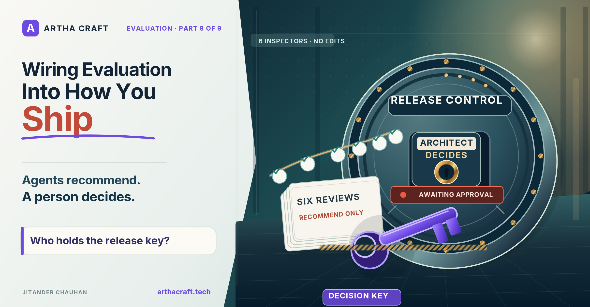

On every change
The code checks from Part 4: structure, required fields, evidence that resolves. Milliseconds, every time.
A check you have to remember to run is a check that eventually does not run. Layer the checks by cost and timing, let agents review and people decide, and keep a record of every release.

Parts 1 to 7 of this series each describe a check: a golden set, a regression run, an evidence check, a judge, a trace, a usefulness test. Left on their own, each is a good intention, and good intentions get run when there is time, by whoever remembers, and skipped the week before a deadline.
We have also seen the opposite failure. In Part 6, agents left to run on their own re-ran the entire test suite after every small commit and burned most of a usage allowance in three days. Running nothing is a failure, and so is running everything all the time.
Wiring evaluation into how you ship means deciding, once, which checks run when, what each one costs, what happens when one fails, and who decides. Then the pipeline remembers so that people do not have to.
Software teams have long arranged tests by cost: many fast, cheap tests at the bottom, few slow end-to-end tests at the top, because tests that run through the full interface are "brittle, expensive to write, and time consuming to run." [1] The same logic applies to evaluating AI output. Each check from this series has a natural moment:
The code checks from Part 4: structure, required fields, evidence that resolves. Milliseconds, every time.
The golden cases the change could affect. Minutes, not hours.
The full golden set, the judge from Part 5, the agent runs traced and compared from Part 6, the review cycle below. Hours, while nobody is waiting.
Everything, plus business sign-off from Part 3. This is where "re-run everything" belongs.
The Part 4 checks on every call, sampled judging, and the failure rates watched for drift. Part 9 picks this up.
Guides to evaluating AI products use the same shape: fast assertions on every change, human and model review on a cadence, experiments only after significant changes. [2] Where our cycle differs is in who acts on the results, which is the subject of the next two sections.
These moments are Part 1's four levels put on a timetable: the call level on every change, the task and journey levels on merges and on a schedule, and the production level on real traffic.
Our version of the scheduled layer is a cycle of six agents that run in strict order: [3]
Two more agents are called in when needed. When the screen runner finds a user flow that no test covers, a test-writing agent writes one, and touches nothing else. When the architect approves a usability suggestion, it becomes a task for a coding agent. And the user journeys are handed to an agent from a different company as the starting point for journey testing, so no single provider's model has the last word; models from different providers still share many of the same mistakes. [4]
Today we run this cycle on demand; in another engagement, the same design runs every night.
The cycle itself changes over time, and the list of agents grows or shrinks based on what the checks find. When a run shows a kind of problem nothing is looking for, a check is added for it. When a check stops finding anything, or another already covers it, it is retired; our earlier fixing agent was folded into the advocate this way. The pipeline is evaluated the same way as the product: by what it catches and what it misses.
The most important change we made was to the advocate. In its first version it was judge and fixer at once: it challenged the findings, then fixed the critical and high-severity ones itself, with a written argument for each change. That is close to the self-review Part 5 warns against: the agent that decides something is wrong also decides how to make it right, and nothing independent checks the fix.
Now the advocate fixes nothing; it compiles and recommends. The architect decides what gets fixed, and a coding agent fixes only what was approved. Two rules are absolute: usability suggestions always come to a person, and a bug that was deliberately deferred is never patched without approval for that specific item.
Agents review, run, challenge and compile. People decide what changes.
That is what we mean by a gate: a point the work cannot pass without a decision, as opposed to a report that someone may read. Write down which findings stop a release, which only warn, and who can override them. Record every override with its reason. A gate everyone ignores is worse than no gate, because it looks like control.
Every run of the pipeline leaves a record: the labels from Part 4, the check results, the judge's verdicts and their calibration from Part 5, the traces from Part 6, the advocate's findings and the decisions made on each. Together that is the evidence of how a release was evaluated and who approved it.
Published rubrics can help decide what belongs in it. One widely cited rubric for machine-learning systems lists "28 specific tests and monitoring needs" for production readiness. [5] Few teams need all of them, so the useful exercise is to go through the list and decide, on purpose, which ones you are not doing.
Evaluation decays if nobody tends it: golden cases go stale, thresholds stop matching the business, the judge drifts, and the pipeline gets slower until people start skipping it. Researchers at one large technology company warned years ago that "it is common to incur massive ongoing maintenance costs in real-world ML systems." [6] An evaluation pipeline is part of that system, and it has the same cost.
Name an owner for each part: who maintains the golden set and approves new cases, who owns each threshold, who recalibrates the judge, and who watches what the pipeline itself costs to run. Part 1 listed cost and latency as things to measure; the pipeline's own cost belongs on that list. Without owners, the pipeline keeps running long after it has stopped telling you anything.
The release record is audit evidence. Gates and overrides need named owners and written reasons.
Pipeline cost is a product cost, and layering by cost is what keeps evaluation affordable as usage grows.
Evaluating agents are read-only, and fixing is a separate step that a person approves.
Checks that depend on memory get skipped.
Checks that run on everything get expensive.
Checks that nobody owns go stale.
Layer them, gate them, record them, and put a name next to each one.
Jitander Chauhan